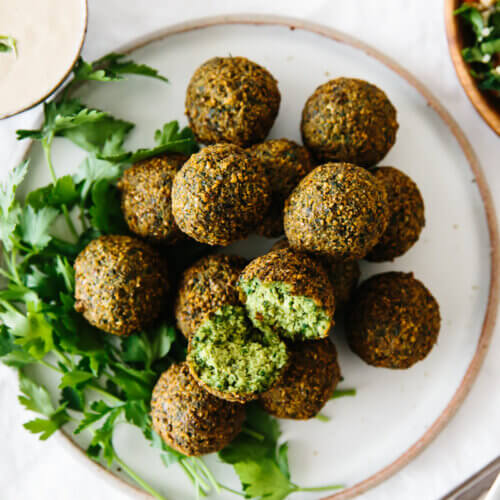

Casa Papagallo's Delicious Falafel Recipe

Ingredients
- 1 cup dried chickpeas, soaked overnight (don't use canned chickpeas)
- 1/2 cup onion, roughly chopped
Directions
- The night before, soak the dried chickpeas in water. Make sure the water covers the chickpeas by 2-3 inches, as they'll triple in size.
- Drain and rinse the chickpeas and add them to your food processor, along with the onion, parsley, cilantro, pepper, garlic, cumin, salt, cardamom and black pepper.